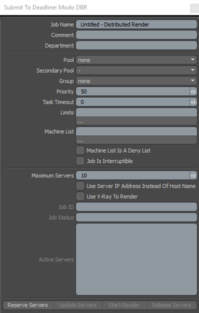
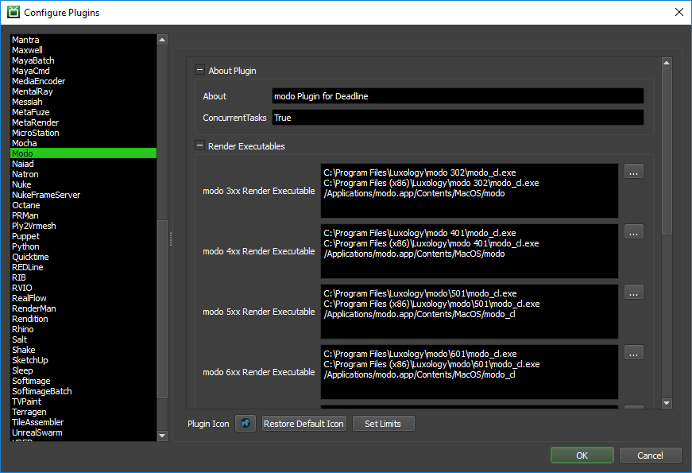

modo¶
Job Submission¶
You can submit jobs from within modo by using the integrated submitter (7xx and up), running SubmitModoToDeadline.pl script, or you can submit them from the Monitor.
To run the integrated submitter within modo 7xx or later, after it’s been installed:
Render -> Submit To Deadline
To run the integrated submitter within modo 6xx or earlier, after it’s been installed:
Under the system menu, choose Run Script
Choose the DeadlineModoClient.pl script from [Repository]\submission\Modo\Client
Alternatively, you can also copy this script to your local machine and run it from there. You should do this if the path to your Deadline repository is a UNC path and you are running modo on Windows OS.
Setting Up A Scene For Rendering¶
In order to set up a Modo scene for rendering you must have at least one render output that is both enabled and has an output filename set. The render outputs can be found within the shader tree (Shading tab in the default Modo Layout).
Submission Options¶
The general Deadline options are explained in the Job Submission documentation, and the Draft/Integration options are explained in the Draft and Integration documentation. The modo specific options are:
Job Options
These are the general modo options:
Modo Project Folder: The project folder set for the scene. This is used to map path’s that are relative to the project directory.
Render With V-Ray: Enable this option to use V-Ray’s renderer instead of modo’s renderer. This requires the V-Ray for modo plugin to be installed on your render nodes.
Pass Group: The pass group to render, or blank to not render a pass group.
Submit Each Pass Group As A Separate Job: If enabled, a separate job will be submitted for each Pass Group in the scene.
Override Output
You have the option to override where the rendered images will be saved. If this is disabled, Deadline will respect the output paths in the modo Output items in your scene file. If this is enabled, be sure to set the Output Pattern appropriately if your scene has multiple passes, output items, or left and right eye views.
Override Render Output: Enable to override where the rendered images are saved.
Output Folder: The folder where the rendered images will be saved.
Output File Prefix: The prefix for the image file names (extension is not required).
Output Pattern: The pattern for the image file names.
Output Format: The format of the rendered images. Note that you can choose the layered PSD or EXR formats here, and that Tile Rendering supports the layered EXR format.
Tile Rendering Options
Enable Tile Rendering to split up a single frame into multiple tiles.
Enable Tile Rendering: If enabled, the frame will be split into multiple tiles that are rendered individually and can be assembled after.
Frame To Tile Render: The frame that will be split up.
Tiles In X: Number of horizontal tiles.
Tiles In Y: Number of vertical tiles.
Submit Dependent Assembly Job: Submit a job dependent on the tile job that will assemble the tiles.
Cleanup Tiles after Assembly: If selected the tiles will be deleted after assembly.
Error on Missing Tiles: If enabled, then if any of the tiles are missing the assembly job will fail.
Assemble Over: Determine what the Draft Tile Assembler should assemble over be it a blank image, previous output or a specified file.
Error on Missing Background: If enabled, then if the background file is missing the job will fail.
Use Jigsaw: Enable to use Jigsaw for tile rendering.
Open Jigsaw Panel: Opens the Jigsaw UI
Reset Jigsaw Background: Resets the background of the jigsaw regions
Save Jigsaw Regions: Saves the Jigsaw Regions to the scene File
Load Jigsaw Regions: Loads the save Jigsaw Regions and sends them to the open panel.
Interactive Distributed Rendering¶
You can submit interactive modo Distributed Rendering jobs to Deadline. The instructions for installing the integrated submission script can be found further down this page. The interactive submitter will submit a special modo server job to reserve render nodes.
Note that this feature is only supported in modo 7xx and later.
Submission Options¶
The general Deadline options are explained in the Job Submission documentation. The modo Distributed Rendering specific options are:
Maximum Servers: The maximum number of modo Servers to reserve for distributed rendering.
Use Server IP Address instead of Host Name: If checked, the Active Servers list will show the server IP addresses instead of host names.
- Use V-Ray To Render: If checked, V-Ray’s distributed rendering will be used instead of Modo’s.
Note that this option requires V-Ray for Modo to be installed, and is only supported by Modo 701 SP5, Modo 801 SP2 or higher, and Modo 901 or higher.
Rendering¶
After you’ve configured your submission options, press the Reserve Servers button to submit the modo Server job. After the job has been submitted, you can press the Update Servers button to update the job’s ID and Status in the submitter. As nodes pick up the job, pressing the Update Servers button will also show them in the Active Servers list. Once you are happy with the server list, press Start Render to start distributed rendering.
Note that the modo Server process can sometimes take a little while to initialize. This means that a server in the Active Server list could have started the modo Server, but it’s not fully initialized yet. If this is the case, it’s probably best to wait a minute or so after the last server has shown up before pressing Start Render.
After the render is finished, you can press Release Servers or close the submitter to mark the modo Server job as complete so that the render nodes can move on to another job.
Network Rendering Considerations¶
This Article provides some useful information for setting up modo for network rendering.
Cross-Platform Rendering Considerations¶
In order to perform cross-platform rendering with modo, you must setup Mapped Paths so that Deadline can swap out the Scene and Output file paths where appropriate. You can access the Mapped Paths Setup in the Monitor while in power user mode by selecting Tools -> Configure Repository. You’ll find the Mapped Paths Setup in the list on the left.
Note that Deadline supports path mapping for any texture paths within the modo scene file (see the Path Mapping setting in the modo Plugin Configuration section below). However, the modo scene file stores its paths a bit differently, for example:
Actual Path |
Path in Modo Scene |
|
|
In Deadline 7.2.1 and later, you can enable the Massage modo Paths setting in the modo Plugin Configuration and Deadline will automatically convert the internal scene path into a normal looking path before feeding it into the path mapping system.
In Deadline 7.2 or earlier, you will have to add special Mapped Paths entries in the Repository Options for these paths to get replaced properly. For example, you might already have a Mapped Path entry like this to handle paths from macOS to Windows:
Replace Path: /Volumes/share/
Windows Path: \\server\share\
Linux Path:
Mac Path:
However, the modo scene file will probably be storing texture paths as “Volumes:share/” instead of “/Volumes/share/”. This means you’ll need another Mapped Path entry that looks like this:
Replace Path: Volumes:share/
Windows Path: \\server\share\
Linux Path:
Mac Path:
To go from Windows to macOS, you’ll need a Mapped Path entry that looks like this. Note that “server:share/” represents the UNC path “//server/share/”:
Replace Path: server:share/
Windows Path:
Linux Path:
Mac Path: /Volumes/share
Finally, If you wish to disable the Path Mapping setting in the modo Plugin Configuration, but still wish to perform cross-platform rendering with modo, you must ensure that your modo scene file is on a network shared location, and that any footage or assets that the project uses is in the same folder. Then when you submit the job to Deadline, you must make sure that the option to submit the scene file with the job is disabled. If you leave it enabled, the scene file will be copied to and loaded from the Worker’s local machine, and thus won’t be able to find the footage.
Plugin Configuration¶
You can configure the modo plugin settings from the Monitor. While in power user mode, select Tools -> Plugins Configuration and select the modo plugin from the list on the left.
Note, if the executable supports a MAJOR.MINOR.REVISION (9.0.123) numbering system in its path, then you will need to configure the explicit exe path to the particular revision that you have installed on your machines. Deadline does not track every possible revision available or indeed where it might be custom installed to, so a studio should verify their exe paths are correct for each application version they choose to use with Deadline. Multiple exe paths can still be declared and the first one that is found on a particular Worker on a particular platform will be used from the exe list.
Render Executables
modo Executable: The path to the modo executable file used for rendering. Enter alternative paths on separate lines. Different executable paths can be configured for each version installed on your render nodes.
Geometry Cache
Auto Set Geometry Cache: Enable this option to have Deadline automatically set the modo geometry cache before rendering (based on the geometry cache buffer below).
Geometry Cache Buffer (MB): When auto-setting the geometry cache, Deadline subtracts this buffer amount from the system’s total memory to calculate what the geometry cache should be set to.
Path Mapping (For Mixed Farms)
Enable Path Mapping: If enabled, a temporary modo file will be created locally on the Worker for rendering because Deadline does the path mapping directly in the modo file. This feature can be turned off if there are no Path Mapping entries defined in the Repository Options.
Resolve Path Aliases: If enabled, paths in the modo file will have their path aliases replaced with the path as defined on the submitting machine before pathmapping is applied.
Massage modo Paths: If enabled, paths in the modo file will be massaged to look like regular paths before being fed into Deadline’s path mapping system. For example, a path that starts with “server:share/” within the modo file will be massaged to start with “//server/share/” before path mapping is applied.
CPU Affinity
Limit Threads To CPU Affinity: If enabled, the number of render threads will be limited to the CPU affinity of the rendering Worker.
Integrated Submission Script Setup¶
This section describes how to install the integrated submission scripts for modo. The integrated submission scripts and the following installation procedures have been tested with modo 7xx and later.
You can either run the Submitter installer or manually install the submission script.
Submitter Installer¶
Run the Submitter Installer located at
<Repository>/submission/Modo/Installers.
Manual Installation¶
7xx or later:
Open modo, and select System -> Open User Scripts Folder.
Copy the DeadlineModo folder from
[Repository]\submission\Modo\Clientto this User Scripts folder.Restart modo, and you should find the Submit To Deadline menu item in your Render menu.
6xx or earlier:
Under the system menu, choose Run Script.
Choose the DeadlineModoClient.pl script from
[Repository]\submission\Modo\ClientAlternatively, you can also copy this script to your local machine and run it from there. You should do this if the path to your Deadline repository is a UNC path and you are running modo on Windows OS.
Custom Sanity Check¶
A CustomSanityChecks.py file can be created in [Repository]\submission\Modo\Main, and will be executed if it exists when the user clicks the Submit button in the integrated submitter. This script will let you override any of the properties in the submission script prior to submitting the job. You can also use it to run your own checks and display errors or warnings to the user. Finally, if the RunSanityCheck method returns False, the submission will be cancelled.
Here is a very simple example of what this script could look like:
import lx
import lxu
import lxu.command
import lxifc
def errordialog(title, message):
lx.eval('dialog.setup error')
lx.eval('dialog.title {%s}' % title)
lx.eval('dialog.msg {%s}' % message)
try:
lx.eval('+dialog.open')
except:
pass
def RunSanityCheck():
lx.eval('user.value deadlineDepartment {The Best Department!}')
lx.eval('user.value deadlinePriority 33')
lx.eval('user.value deadlineConcurrentTasks 2')
errordialog('Error', 'This is a custom sanity check!')
return True
You can open the LoadDeadlineModoUI.py file from [Repository]\submission\Modo\Client\DeadlineModo\pyscripts to see the available Deadline modo values.
Distributed Rendering Script Setup¶
You can either run the DR Submitter installer or manually install the DR submission script.
Submitter Installer¶
Run the Submitter Installer located at
<Repository>/submission/ModoDBR/Installers.
Manual Installation¶
7xx or later only:
Open modo, and select System -> Open User Scripts Folder.
Copy the DeadlineModoDBR folder from
[Repository]\submission\ModoDBR\Clientto this User Scripts folder.
Verify Installation¶
Restart modo, and you should find the Submit To Deadline: Modo DBR menu item in your Render menu.
FAQ¶
Which versions of modo are supported?
Modo 3xx and later are supported.
Which versions of modo can I use for interactive distributed rendering?
Modo 7xx and later are supported.
When rendering with modo on Windows, it hangs after printing out “@start modo_cl [48460] Luxology LLC”.
We’re not sure of the cause, but a known fix is to copy the ‘perl58.dll’ from the ‘extra’ folder into the main modo install directory (“C:Program FilesLuxologymodo601").
When rendering with modo on macOS, the Worker icon in the Dock changes to the modo icon, and the render gets stuck.
This is a known problem that can occur when the Worker application is launched by double-clicking it in Finder. There are a few known workarounds:
Start the Launcher application, and launch the Worker from the Launcher’s Launch menu.
Launch the Worker from the terminal by simply running ‘DEADLINE_BIN/deadlineworker’ or ‘DEADLINE_BIN/deadlinelauncher -slave’, where DEADLINE_BIN is the Deadline bin folder.
Use ‘modo’ as the render executable instead of ‘modo_cl’.
When tile rendering, each tile is rendered, but there is image data in the “unrendered” region of each tile.
This happens when there is a cached image in the modo frame buffer. Open up modo on the offending render node(s) and delete all cached images to fix the problem.
When rendering my Workers are ignoring the CPU Affinity.
Some renderers modify the CPU affinity when a render starts. In these cases you can enable the Plugin Configuration option “Limit Threads To CPU Affinity” which will limit the number of threads the renderer can use.
Plugin Error Messages¶
This is a collection of known modo error messages and their meanings, as well as possible solutions. We want to keep this list as up to date as possible, so if you run into an error message that isn’t listed here, please visit the Thinkbox Help Centre and let us know.
Currently, no error messages have been reported for this plugin.

{kind=link}
{kind=link}
{kind=link}
{kind=link}
{kind=link}
{kind=link}
{kind=link}